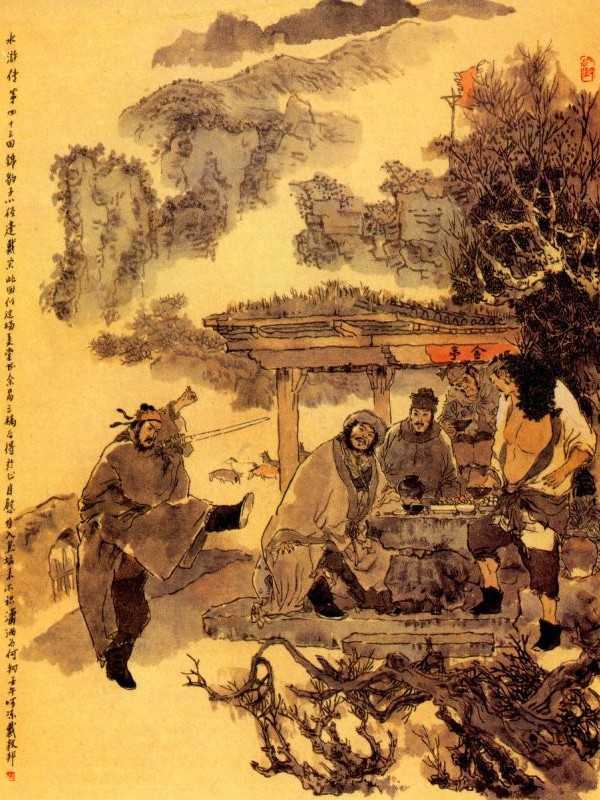
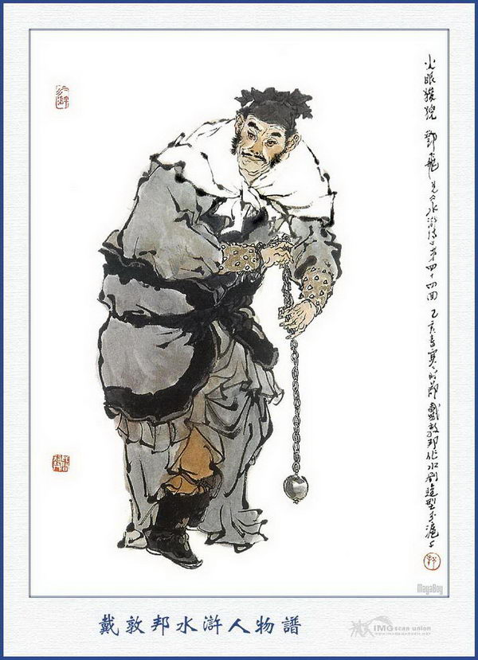
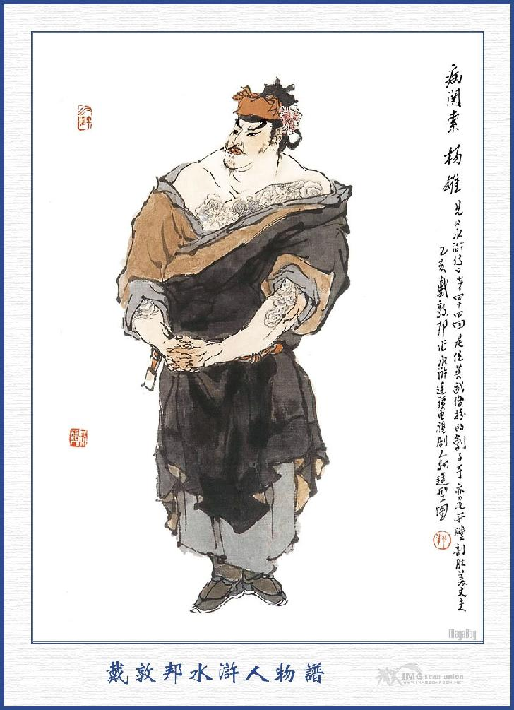
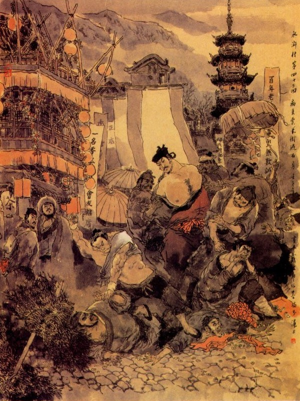
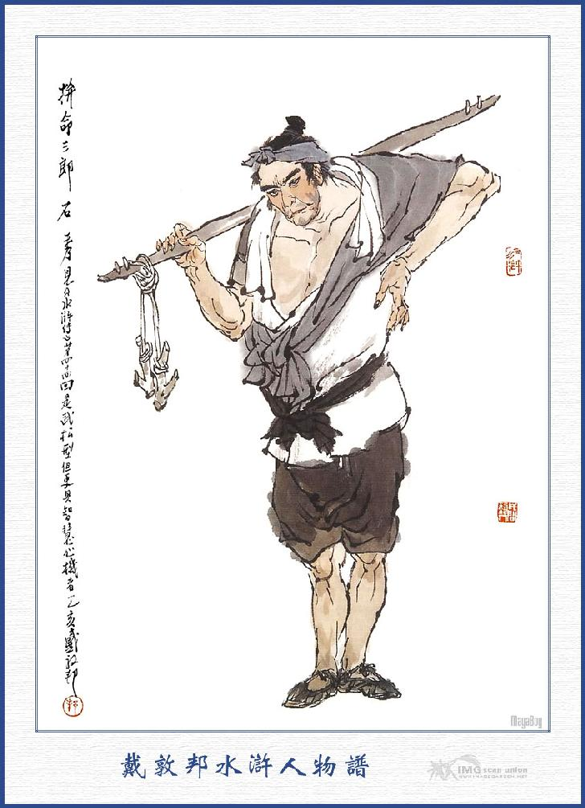

Khi đó Lý Quỳ xông ra đánh nhau với Lý Vân, vừa được dăm bảy hiệp thì Chu Phú đã vác dao ra ngăn giữ hai bên mà nói lên rằng:
- Khoan, hãy khoa, nghe tôi nói đã.
Lý Quỳ cùng Lý Vân đều dừng tay lại, Chu Phú nói rằng:
- Xin sư phụ nghe lời tôi nói: Tôi đây nhờ ơn sư phụ dạy bảo đã nhiều, trong lòng nào phải không biết ơn sư phụ, song lúc này anh tôi là Chu Quý, hiện đương làm Đầu Lĩnh ở Lương Sơn Bạc, nay vâng tướng lệnh của Cập Thời Vũ Tống Công Minh, đi theo Lý Quỳ đến ở đất này. Song chẳng may mới rồi Lý Quỳ bị bắt, anh tôi sợ về Lương Sơn không biết nói với Tống Công Minh thế nào cho được. Bởi vậy chúng tôi phải làm như thế, để cứu lấu Lý Ca Ca cho thoát nạn.
Vừa rồi Lý Ca Ca toan sát hại sư phụ, song chúng tôi không cho như thế, nhất định không nghe hắn, để đợi sư phụ tỉnh rồi sẽ thưa chuyện. Tiểu đồ thiết tưởng sư phụ là bậc thông minh hiểu biết, chắc rằng cũng đã xét đoán trong lòng, vậy hiện nay sư phụ đã đánh sổng mất Lý Quỳ và đã làm chết hại bao người ở đó thì phỏng chừng sư phụ có trở về huyện lị được không? Điều đó chắc là nguy lắm. Vậy bất nhược tiện đây sư phụ lến Lương Sơn Bạc cùng chúng tôi, để nhập bọn với Tống Công Minh thì lại là thượng sách? Chẳng hay sư phụ nghĩ sao.
Lý Vân ngần ngại một lát rồi bảo với Chu Phú rằng:
- Nhưng mà hiền đệ ơi! Chỉ sợ họ không dung bọn mình mà thôi.
Chu Phú cười mà rằng:
- Chết nỗi! Sư phụ không biết tiếng Sơn Đông Cập Thời Vũ Tống Công Minh là người trọng nghĩa sơ tìa, chỉ hay chiêu hiền nạp sĩ xưa nay hay sao?
Lý Vân nghe nói thở dài một tiếng mà rằng:
- Bây giờ có nước không được về, có nhà không được ở, còn biết làm sao cho tiện! May mà tôi đây chưa có vợ con bận rộn, không còn ai liên lụy đến thân cũng không sợ gì Quan Tư bắt bớ. Thôi thì xuống đất lên trời đi đâu cũng xin theo một thể.
Bấy giờ Lý Quỳ cười mà bảo rằng:
- Thế mà Ca Ca không bảo cho Lý Quỳ trước, có phải là chào nhau vui vẻ. khỏi phải đánh nhau không?
Nói đoạn Lý Vân cùng hai người, rảo bước đi theo Chu Quý. Đi đến nửa đường bốn người cùng gặp nhau rồi cùng áp xa trượng trở về Lương Sơn Bạc. Khi về gần đến Lương Sơn thì bỗng gặp Mã Lân, Trịnh Thiên Thọ, đương đi đón. Hai người cùng báo với Chu Quý rằng:
- Tiều Đầu Lĩnh với Tống Đầu Lĩnh, thấy các bác đi lâu, cho nên phải cho chúng tôi đi theo để dò thăm tin tức. Nay các bác đã về tới đây, vậy chúng tôi phải xin về báo cho hai ngài biết trước.
Nói đoạn hai người cùng về trước.
Đến hôm sau bốn vị hảo hán cùng gia quyến Chu Quý đều tới Lương Sơn Bạc, Chu Quý liền dẫn cả vào Tụ Nghĩa Sảnh rồi đưa Lý Vân vào chào Tống Giang và Tiều Cái, cùng các vị Đầu Lĩnh trước mà giới thiệu rằng:
- Ông này là Lý Vân, biệt hiệu là Thanh Nhỡn Hổ, vốn là Đô Đầu ở huyện Nghi Thủy xưa nay.
Đoàn rồi đem Chu Phú ra chào hỏi mọi người mà rằng:
- Người này là Chu Phú, biệt hiệu Tiếu Diện Hổ, là em chúng tôi, cùng xin vào để hầu dưới trướng.
Bấy giờ Lý Quỳ vào lạy Tống Giang,xin lấy lại đôi song phủ rồi đem chuyện Hắc Toàn Phong giải cho mọi mọi người nghe, ai cũng nhịn cười không được. Lý Quỳ lại kể chuyện cõng mẹ qua Nghi Lĩnh bị hổ ăn thị rồi rân rấn nước mắt mà khóc.
Tống Giang thấy vậy cười mà rằng:
- Ngươi đi đó đã giết được bốn con hổ mà sơn trại ta lại được thêm hai con hổ nữa thì còn gì hay hơn, nay tất phải ăn mừng mới được.
Các vị Đầu Lĩnh cùng cả vui, liền sai giết dê, ngựa làm thịt để khao mừng các vị Đầu Lĩnh mới đến. Khi đó Tiểu Đầu Lĩnh để cho các vị Đầu Lĩnh mới đến ngồi trên Bạch Thắng ở phía tên tả. Đoạn Ngô Dụng bàn đến việc sơn trại mà rằng:
- Gần đây trong sơn trại đã được mười phần hưng vượng, các vị hảo hán ở bốn phương đều nghe tiếng đến đây tụ họp cũng đều nhờ ân đức của hai vị Ca Ca cùng anh em tất cả, song ngày nay lại phải cho Chu Quý xuống coi tửu điểm để thay cho Thạch Dũng, Hầu Kiệt về, còn gia quyến Chu Phú phải xếp nhà riêng để cho cùng ở. Bây giờ công việc trong sơn trại không phải còn lúi xúi như ngày xưa, vậy phải đặt thêm ba chốn tửu điếm nữa để thăm dò tin tức sự thể bên ngoài cùng là đón tiếp các vị nghĩa sĩ lên núi, hoặc khi có quan quân kéo đánh đến nơi thì báo cho sơn trại biết trước để biết đường phòng bị đánh nhau. Phía bắc núi bên tây địa thế rộng rãi, khá cho anh em Đồng Uy, Đồng Mãnh đem vài mươi người nhà bếp ra mở một ngôi hàng gần đó.
Lại sai Lý Lập cho người ra mở hàng ở phía núi bên nam và Thạch Dũng đem mấy người mở hàng ở phía bắc, các nơi đó đều cho làm Thủy Đình đặt lệnh tiễn và có thuyền tiếp ứng để phòng khi báo việc cho tiện. Trước núi đặt ba tòa cửa quan cho Đỗ Thiên coi giữ tất cả, có cần việc gì phải hết sức để làm, không được phút chốc rời bỏ đi đâu. Đào Tôn Vượng nguyên tay trang hộ xuất thân, đã quen việc sửa sang, khơi đắp, vậy nay cho làm việc khơi đường cảng, sửa thủy binh, chỉnh đốn quanh thành Uyển Tử và sửa sang các đường trước núi. Tưởng Kính coi giữ sổ sách trong kho và trông nom việc thu, phát; Tiêu Nhượng coi việc văn thư, hiệ lệnh cùng sổ các Đầu Lĩnh ở sơn trại. Kim Đại Kiện thì chuyên giữ ấn tín, binh phù cùng chỉ bài các thứ; Hầu Kiện thì chế tạo các đồ mũ áo bào giáp cùng các cờ Ngũ Phượng để dùng vào việc binh. Lý Vân coi việc sửa sang nhà cửa cung thất trong sơn trại; Mã Lân coi việc đóng thuyền; Tống Vạn, Bạch Thắng xuống đóng trại ở Kim Sa; Vương Nụy Hổ, Trịnh Thiên Thọ đóng trại ở bến Áp Thủy; Mục Xuân, Chu Phú quản tiền lương trong sơn trại; Lã Phương, Quách Thịnh cho vào ở hai phòng xép bên Tụ Nghĩa Sảnh, còn Tống Thanh thì chuyên coi việc yến tiệc. Khi cắt đặt xong, sơn trại lại cùng nhau yến ẩm ba ngày, rồi từ đó chỉ thao luyện quân mã cùng tập trận thủy, bộ với nhau rất là tề chỉnh.
Chợt một hôm Tống Giang nói với Tiều Cái, Ngô Dụng cùng mọi người rằng:
- Ngày nay anh em ta cùng tụ nghĩa ở đây, chỉ còn thiếu có Công Tôn Thắng không biết vì cớ sao chưa đến? Dạo trước đã hẹn với ông ta độ trăm ngày là tất đến đây, vậy ngày quá hạn đã lâu mà chưa thấy đến… hay hoặc giả ông ta quên lời ước ấy chăng? Ta muốn phiền Đới Tung qua đó một phen để dò xem tin tức thế nào.
Đới Tung vâng lời nói rằng:
- Việc đó tôi xin đi.
Tống Giang cả mừng nói rằng:
- Vâng, chỉ có hiền đệ đi thì trong mươi hôm có thể biết tin ngay, vậy xin hiền đệ đi ngay cho.
Đới Tung vâng lệnh sắp sửa đồ hành lý rồi sáng hôm sau từ tạ các vị Đầu Lĩnh trở dậy đi sớm. Khi xuống khỏi bến nước, chàng liền buộc bốn miếng giáp mã vào chân mà mau thẳng tới Kế Châu.
Đi được ba ngày tới địa phận Nghi Thủy, thấy dân sự vẫn xôn xao về chuyện Lý Quỳ trốn thoát, làm lụy đến cả Lý Vân, mà hiện nay chưa biết là đi đâu mất cả. Đới Tung nghe thấy vậy trong bụng cười thầm, không dám nói ra.
Một hôm chàng đang đi giữa đường bỗng thấy xa xa có người tay cầm cây đao hỗn chiến thiết đang đi ở đó. Người đó thấy Đới Tung đi nhanh vù vù như gió liền đứng lại gọi rằng:
- Thần Hành Thái Bảo…
Đới Tung nghe gọi quay lại nom thì thấy một Đại Hán đầu to, tai lớn, mũi thẳng, mồm vuông, vai rộng, lưng cong, mắt xanh, mày nhỏ, đang đứng ở đường tắt bên cạnh núi.
Chàng thấy vậy đi vội lại hỏi rằng:
- Tráng sĩ là ai, tôi không được biết? Sao ngài gọi đến tên tôi?
Đại Hán kia cũng vội vàng đáp lại:
- Túc hạ quả là Thần Hành Thái Bảo phải không?
Nói xong vất cây giáo xuống đất rồi cúi lạy Đới Tung. Đới Tung đỡ dậy, đáp lễ mà hỏi rằng:
- Túc hạ là ai, xin cho tôi được biết?
Người kia đáp:
- Tiểu đệ họ Dương tên Lâm, người ở phủ Chương Đức, xưa nay hay lén lút chốn sơn lâm, người ta thường gọi là Cẩm Báo Tử. Cách đây vài tháng tôi được gặp Công Tôn Thắng tiên sinh tại tửu điếm kia. Tiên sinh có thuật chuyện hai Đầu Lĩnh Tiều, Tống ở Lương Sơn Bạc rất là nghĩa khí, và có viết cho tôi một phong thư để tiến dẫn vào sơn trại, song tôi vẫn dùng dằng chưa dám đường đột đến ngay. Công Tôn Thắng lại nói chỗ đầu đường Lý Gia có hàng rượu của Chu Quý để chiêu nạp những người lên sơn trại, và trong sơn trại có một Đầu Lĩnh chuyên quyến dẫn người hiền, phi báo công việc là Thần Hành Thái Bảo Đới Viện Trường, đi nhanh một ngày được tám trăm dạm. Nay nhân thấy Huynh trưởng đi nhanh như biến nên tôi đoán vậy mà gọi thử xem có phải hay không? Dè đâu lại gặp được nhân huynh ở đây, thật là may quá.
Đới Tung nói:
- Tôi đi bây giờ cũng là định sang Kế Châu để tìm Công Tôn Thắng tiên sinh đây. Tiên sinh về Kế Châu đã mấy tháng nay không thấy tin tức chi, nhân thế hai vị Đầu Lĩnh Tiều, Tống sốt lòng mong đợi, sai tôi đi tìm về sơn trại; may là được gặp ngài ở đây, thực là không ngờ vậy.
Dương Lâm nói:
- Tiểu đệ tuy là người phủ Chương Đức song địa hạt Kế Châu cũng thường hay đi lại luôn; nếu ngài rộng thương thì xin theo đi một thể cho vui.
Đới Tung nói rằng:
- Nếu được túc hạ có lòng như thế thì còn gì may mắn hơn? Ta sang đó dò được Công Tôn tiên sinh rồi cùng về sơn trại lại càng hay lắm.
Dương Lâm nghe nói cả mừng, liền xin với Đới Tung kết làm anh em. Đoạn rồi Đới Tung cởi giáp mã ra để hai người cùng đi lững thững với nhau. Tối hôm ấy hai người tìm vào trọ ở thôn điếm rồi Dương Lâm sai làm rượu để thiết đãi Đới Tung.
Đới Tung từ chối mà rằng:
- Tôi đi đây thường phải dùng đến phép Thần Hành, không thể ăn mặn được, xin ăn chay cho tiện.
Dương Lâm vâng lời bảo làm cơm chay hai người cùng ăn rồi đi nghỉ với nhau. Sáng hôm sau hai người lại dậy sớm ăn cơm uống nước rồi sắp sửa cùng đi.
Dương Lâm nói với với Đới Tung rằng:
- Nhân huynh dùng phép Thần Hành để đi thì tiểu đệ làm sao theo cho kịp được?
Đới Tung cười mà bảo rằng:
- Phép Thần Hành của tôi có thể đem cả người khác theo cũng được, nay tôi buộc cho bác hai miếng giáp mã vào chân rồi làm phép cẩn thận thì bác đi đứng cũng được nhanh nhẹn như tôi, không khác gì cả. Không thế thì theo thế nào cho kịp tôi.
- Chỉ sợ tiểu đệ là người phàm tục, không thể nào làm thế nào được thì sao?
- Không hề chi? Phép này tôi thường để đem người ta đi luôn luôn. Duy trong khi đi, phải ăn chay mới được.
Nói đoạn liền đem theo hai miếng giáp mã buộc vào chân cho Dương Lâm và buộc hai miếng vào chân mình mà làm phép Thần Hành để cùng nhau ra đi. Trong khi đi đường, hai người cùng nhau kể chuyên giang hồ, rất là vui thú. Trưa hôm ấy, đi đến một con đường trạm, chung quanh toàn thị núi lớn non cao, Dương Lâm bảo với Đới Tung rằng:
- Ca Ca ơi! Trước mặt chỗ này có một tòa núi cao to đẹp, sơn thủy hữu tình, tục gọi là Ẩm Mã Xuyên, xưa nay vẫn có một bọn cướp to ở đó, song không biết bây giờ thế nào?
- Hai người vừa nói chuyện, vừa đi đến bên núi thì chợt thấy có tiếng trống ầm ĩ rồi có một bọn hơn trăm lâu la, kéo ra chận ngang lấy giữa lối đường đi. Trong bọn đó có hai tay hảo hán, mỗi người cầm một thanh đao quát lên:
- Hai người nào? Đi đầu kia, hãy dừng lại đã. Biết điều để tiền mãi lộ đó, ta sẽ tha cho.
Dương Lâm nghe nói cười bảo Đới Tung rằng:
- Ca Ca đứng đó, để tôi giết hai thằng xuẩn hán này cho Ca Ca xem.

Nói rồi múa gươm xông vào để đánh. Hai hảo hán kia thấy thế lực Dương Lâm hùng dũng thì đều chạy đến để xem rồi có một anh nói lên rằng:
- Hãy khoan, người này có phảilà Dương Lâm Ca Ca đó chăng?
Bấy giờ Dương Lâm dừng tay lại, nhìn kỹ hai người mới biết là quen thuộc. Hai người ấy trông rõ Dương Lâm thì cũng vui mừng hớn hở rồi bảo nhau cùng đến vái chào.
Dương Lâm liền gọi Đới Tung mà bảo rằng:
- Mời Huynh trưởng hãy đến đây, để nói chuyện với hai anh em ông này đã.
Đới Tung hỏi:
- Hai vị tráng sĩ này là ai? Sao lại biết được hiền đệ?
Dương Lâm trỏ vào người đứng trên mà bảo với Đới Tung rằng:
- Ông này là người ở phủ Tương Dương, họ Đặng tên Phi, vì hai con mắt đo đỏ, nên người ta thường gọi là Hoả Nhỡn Toan Nghê (Sư tử mắt đỏ), ông ta khiến cây thiết liên rất giỏi không mấy người là dám đến gần. Anh em đã xa nhau năm năm mà không được gặp, hôm nay cũng là bất ý, không ngờ lại gặp ở đây.

ĐẶNG PHI
Nói đến đó thì Đặng Phi hỏi ngay Dương Lâm rằng:
- Vị quan trưởng này là ai? Tất không phải là bậc tầm thường hẳn?
Dương Lâm nói:
- Vị nhân huynh đây là Thần Hành Thái Bảo cùng bọn hảo hán ở Lương Sơn Bạc đấy.
Đặng Phi lại hỏi:
- Có phải ngài là Đới Viện Trưởng, đã có tiếng trong đám giang hồ, đi nhanh một ngày tám trăm dặm đó chăng?
Đới Tung đáp rằng:
- Vâng, chính là tôi đây.
Hai người kia nghe nói, vội vàng cúi chào mà rằng:
- Chúng tôi nghe tiếng ngài đã lâu, nay được gặp đây thực là may mắn lắm.
Đới Tung vội đáp lễ mà hỏi rằng:
- Còn ngài này là ai, xin cho tôi biết?
Đặng Phi nói rằng:
- Người này là anh em tôi, họ Mạnh tên Khang, người châu Chân Định, có nghề đóng thuyền rất giỏi. Dạo trước vì việc nhà nước lấy đá hoa, bắt đóng thuyền lớn, sau bị Quan Tư trách phạt, anh ta liền nóng máu giết ngay bản quan rồi trốn tránh giang hồ trong mấy năm dòng dã, vì anh ta người cao lớn trắng trẻo, nên người ta thường gọi Ngọc Phan Can Mạch Khang.
Đới Tung nghe nói cả mừng rồi cùng nhau chụyện trò rất là tương đắc. Dương Lâm bèn hỏi hai người kia rằng:
- Hai bác tụ nghĩa với nhau được bao nhiêu lâu rồi?
Đặng Phi đáp rằng:
- Chúng tôi đến đây đã được hơn một năm rồi. Hồi nửa năm trước có một người họ Bùi tên Tuyên, nguyên người phủ Kinh Triệu làm chức Khổng Mục ở phủ ấy, rất là thông minh trung trực, một ly không hề xâm phạm của ai, người phủ vẫn gọi ông ta là Thiết Diện Khổng Mục (Khổng Mục mặt sắt), ông ta lại giỏi nghề quyền võ đao thương, trí dũng có thừa, sau vì triều đình sai một quan tham tàn đến đó, liền bắt ông ta đày ra đảo Sa Môn. Khi đi qua đây, chúng tôi liền giết hai tên công sai rồi cứu ông ta, mời lên núi lưu lại để làm chủ trại. Ông ta múa song kiếm rất tài, hiện bây giờ đương ở trong sơn trại. Vậy xin đón hai vị nghĩa sĩ qua chơi một lát cho vui.
Nói đoạn sai tiểu lâu la dắt ngựa đến để mời Đới Tung, Dương Lâm lên trại. Đới Tung, Dương Lâm tháo giáp mã ra rồi cùng lên ngựa mà theo hai người kia cùng đi. Được một lát đi đến trước cửa trại, bốn người cùng xuống ngựa đi vào. Bấy giờ Bùi Tuyên nghe báo, liền ra cổng đón tiếp Đới Tung, Dương Lâm mà mời vào trong Sảnh Tụ Nghĩa.
Đới Tung thấy Bùi Tuyên quả nhiên tướng mạo đường đường, mặt mày trắng trẻo thì trong lòng lấy làm vui mừng vô hạn.
Khi vào tới Tụ Nghĩa Sảnh, Bùi Tuyên mời Đới Tung ngồi giữa: Dương Lâm ngồi thứ nhì, còn Đặng Phi với Mạnh Khang thì ngồi dưới. Đoạn rồi sai làm tiệc lên để thiết đãi. Trong khi dự tiệc Đới Tung đem hết chuyện trọng nghĩa khinh tài của Tiều Cái, Tống Giang, tấm lòng liêu lạc của các vị Đầu Lĩnh trong Lương Sơn Bạc, cùng là địa thế tình hình ở đất Lương Sơn, kể cho mọi người nghe và khuyên nhủ Bùi Tuyên cùng vào đấy nhập đảng.
Bùi Tuyên có ý cảm phục mà rằng:
- Chúng tôi ở đây tuy không có gì, song cũng đã trù tính được vài ba trăm cỗ ngựa vài mươi xe của cải và cũng được dăm ba tiểu lâu la cùng lương thảo có được ít nhiều. Vậy ngài có lòng yên để giới thiệu cho chúng tôi được theo đòi lên sơn trại thì còn gì hơn nữa.
Đới Tung cũng cả mừng mà rằng:
- Tiều Thiên Vương cùng Tống Công Minh tôi đối đãi với người ta, hông hề có chút gì là khác dạ, nay được các ngài tới đó thì thực là thêu gấm thêm hoa, ai không lấy làm quý hóa, vậy xin các ngài cứ thu thập hanh lý trước, đợi khi tôi cùng Dương Lâm sang Kế Châu tìm Công Tôn Thắng Tiên Sinh về đây rồi ta sẽ kéo nhau đi cả cho vui.
Chúng đều cả mừng, cùng ngồi uống rượu với nhau, đến khi gần sáng mới dọn vào Đoạn Kim Đình để ngồi.
Khi vào tới nơi, Đới Tung nom khắp phong cảnh Ẩm Mã Xuyên rồi nức nở khen rằng:
- Chỗ này thực là non cao nước cuốn, đẹp đẽ vô cùng, hai ngài làm gì mà lại được chỗ sơn thủy đẹp đẽ như thế?
Đặng Phi đáp rằng:
- Chỗ này nguyên trước có mấy thằng ngư xuẩn ở với nhau, sau anh em tôi mới đánh cướp mà chiếm lấy ở đây.
Nói đoạn cùng nhau cười ồ cả lên rồi lại ngồi xuống đánh chén. Bùi Tuyên đứng dậy, múa song kiếm để uống rượu cho vui, Đới Tung thấy vậy khen ngợi luôn mồm. Đoạn rồi chiều hôm ấy Đới Tung cùng Dương Lâm đều nghỉ chơi ở trong sơn trại.
Sáng hôm sau Đới Tung xin phép để cùng với Dương Lâm ra đi. Ba vị hảo hán hết lòng cầm giữ không được, đành phải đưa chân xuống núi rồi trở về thu thập để đợi kỳ cùng lên sơn trại.
Bấy giờ Đới Tung cùng Dương Lâm từ giã đất Ẩm Mã Xuyên rồi cùng nhau đi ròng rã hơn mấy hôm trời, mới tới thành Kế Châu. Khi tới nơi tìm vào hàng cơm yên nghỉ.
Dương Lâm bảo với Đới Tung rằng:
- Công Tôn Thắng Tiên Sinh là một người tu hành học đạo, tất nhiên là ở chốn sơn lâm tĩnh mịch chứ không khi nào chịu ở trong thành, vậy ta nên tìm hỏi ở ngoài có lẽ tiện hơn.
Đới Tung nghe nói khen phải, bèn cùng nhau lần mò khắp cả ngoài thành, để dò hỏi thăm nhà Công Tôn Thắng. Hai người thăm hỏi suốt một ngày trời, không hề gặp ai biết nhà Công Tôn Thắng.
Sáng hôm sau lại kéo nhau đến khắp xóm làng phố sá ở quanh đó mà hỏi han, song không ai biết đến. Đến ngày thứ ba, Đới Tung bảo với Dương Lâm rằng:
- Ta cứ vào trong thành, họa may có người biết được ông ta cũng nên.
Nói đoạn hai người cùng vào trong thành Kế Châu để hỏi. Khi vào tới nơi, tìm mấy người già cả để hỏi, có người nói là có lẽ ông ta ở núi to chùa lớn, ở ngoài thành chứ trong thành thì không thấy có.
Đới Tung, Dương Lâm nghe nói, lại cùng nhau vơ vẩn loanh quanh, không biết vào đâu mà thăm hỏi. Khi hai người đương đi trên phố, bỗng nghe có tiếng kèn trống vang lừng rồi thấy một đám rước con con đi đến.
Trong đám rước có hai tên lính coi ngục đi trước. Một tên mang các đồ lễ vật hoa hồng và một tên bưng các đồ vóc đoạn thuê vẽ. Rồi có một người áp ngục tướng mạo đường hoàng, mình lộ những nét hoa rực rỡ mày ngài mắt phượng, nét mặt hơi vàng, có mấy hàng râu lún phún, che lọng đi sau.

DƯƠNG HÙNG
Người này họ Dương tên Hùng, nguyên quán đất Hà nam, nhân theo một người anh em họ sang làm Tri Phủ Kế Châu rồi loanh quanh lưu lạc ở đó. Sau có một ông ông Tri Phủ mới đến, nhân biết Dương Hùng, liền cho làm Áp ngục lưỡng viện và kiếm cả chức việc hành hình. Dương Hùng võ nghệ rất khá, nết mặt hơi vàng, nên người ta thường gọi là Bệnh Quan Sách Dương Hùng. Bấy giờ Dương Hùng vừa mới đi xử trảm ở pháp trường về; có một tên ngục tốt vác thanh đao đi sau và các người quen biết, đều mang lễ vật ra mừng rất nhiều. Khi qua phía trước mặt Đới Tung thấy có một đám người ra để nâng chén mừng. Đoạn rồi bên kia đường có một toán bảy tám người cũng lẻn ra trước mặt Dương Hùng.
Bọn này có một anh đi đầu, tên là Tích Sát Dương Trương Bảo, vốn là quân coi giữ thành trì ở đất Kế Châu, sau thường dắt đám vô lại đi kiếm chác tiền nong, để chơi bời phung phí, Quan Tư cấm mãi không xong.
Trương Bảo vốn biết Dương Hùng ở nơi khác đến đó, mới có lòng khinh bỉ mà không coi vào đâu, hôm đó thấy Dương Hùng được nhiều người đưa các đồ vóc đoạn, nên dắt mấy thằng vô lại đánh chén ngà say rồi đến đó để toan sinh sự. Bấy giờ Trương Bảo gạt rẽ đám đông người ra rồi đến trước mặt Dương Hùng mà kêu lên rằng:
- Xin chào Tiết Cấp.
Dương Hùng thấy vậy, liền đáp rằng:
- Không dám, mời Đại Ca đến xơi rượu.
Trương Bảo nói:
- Tôi đây không cần uống rượu, chỉ đến vay Tiết Cấp dăm bảy chục quan tiền để tiêu thôi.
Dương Hùng cười rằng:
- Tôi xưa nay tuy có biết Đại Ca, song chưa từng giao thiệp đến tiền nong bao giờ, sao Đại Ca lại hỏi như thế?
- Bác bây giờ lừa dối được nhiều tài vật của dân chúng như vậy, phải cho tôi mượn mới được chứ.
- Không, cái đó do người ta có lòng tốt mang đến cho tôi, sao lại bảo là lừa dối được. Anh đừng đến đây nói càn, tôi với đám quân vệ các anh có can thiệp gì?
Trương Bảo lặng ngắt không trả lời rồi ra bảo bọn kia xông vào mà cướp lấy các đồ mừng.
Dương Hùng thấy vậy thét lên rằng:
- Quân này vô lễ thực!
Nói đoạn toan xông lại để đánh mấy đứa cướp đồ. Dè đâu Trương Bảo ôm chặt lấy bụng rồi đằng sau có hai đứa ông chặt lấy tay, không làm sao mà cựa được. Bọn lính canh ngục thấy vậy, đều kinh sợ bỏ chạy mất cả.
Khi đó có một đại hán gánh một gánh củi, vừa đi đến đó; Đai Hán thấy bọn kia giữ chặt lấy Dương Hùng thì đặt ngay gánh củi xuống rồi gạt rẽ người ra mà xông vào can rằng:
- Các anh này làm sao lại giằng co với Tiết Cấp như thế?
Trương Bảo quay lại quắc mắt lên mà rằng:
- Thằng ăn mày này, việc gì đến mày mà mày dám hỏi chúng tao?
Đại Hán nghe nói cả giận, liền giơ tay tát Trương Bảo một cái ngã lăn xuống đất, mấy đứa kia thấy vậy vừa toan túm lại để đánh, bất đồ bị Đại Hán tông cho mỗi đứa một quả đấm, ngã xiêu vẹo ra cả.

Bấy giờ Dương Hùng mới được thoát thân, liền giở tài nghệ mà đánh cho bọn kia, không còn anh nào mà ngóc đầu lên được. Trương Bảo thấy thế nguy bách, liền bò dậy theo mấy anh cướp đồ mà chạy thẳng. Dương Hùng lấy làm tức giận cũng đuổi theo vào trong ngõ để bắt.
Bấy giờ Đại Hán kia vẫn còn hăng hái, đánh đập mọi người ở trên đường cái, Đới Tung, Dương Lâm thấy vậy, lấy làm kính phục mà khen rằng:
- Giữa đường thấy sự bất bình mà cũng tuốt gươm ra sức, thế mới thực là hảo hán.
Nói đoạn liền cùng can Đại Hán kia mà nói rằng:
- Xin hảo hán khoan tay, tên thủ phạm đã chạy mất rồi, còn đánh đập làm chi cho mệt, hảo hán đến đằng kia nói chuyện cho vui.
Đoạn rồi Dương Lâm gánh đỡ gánh củi, còn Đới Tung thì dắt tay hảo hán mà mời bào trong tửu điếm. Khi tới nơi liền đặt gánh củi ở trước cửa rồi ba người cùng vào trong, tìm chỗ để ngồi.
Đại Hán kia chấp tay nói rằng:
- Xin cảm tạ hai người, sao ngài lại có lòng hạ cố đến tôi như thế?
Đới Tung đáp rằng:
- Anh em chúng tôi thấy ngài là bậc nghĩa khí, giữa đường trừ việc bất bình, chỉ e khi lỡ quá tay đến nỗi thiệt hại đến nhân mạng, nên chúng tôi muốn mời ngài đến đây, xơi mấy chén rượu để nói chuyện nhân thể.
Đại Hán kia lại cảm tạ mà rằng:
- Các ngài có lòng cản ngăn, lại cho vào đây ăn uống thực là quá đáng.
Dương Lâm nói:
- Chúng tôi đây là bốn bể anh em cả, có làm chi mà ngài phải nói thế? Xin mời ngài ngồi.
Nói rồi hai người nhường Đại Hán ngồi trên, Đại Hán khiêm tốn hồi lâu rồi Đới Tung, Dương Lâm ngồi về một vế, mời Đại Hán ngồi một bên. Đoạn rồi Dương Lâm lấy một lạng bạc đưa cho tửu bảo, sai dọn rượu lên để ba người cùng uống.
Khi uống được vài tuần rượu, Đới Tung hỏi người kia rằng:
- Dám thưa tráng sĩ quý quân ở đâu, cao tính đại danh là gì, xin cho tôi biết?
Người kia đáp rằng:
- Chúng tôi họ Thạch tên Tú, quê ở phủ Kim Lăng, từ thuở nhỏ theo đòi võ nghẹ, tính thích trừ những việc bất bình. Ai ai cũng gọi là Tiểu Mạnh Tam Lang. Sau theo chú đi buôn ngựa, bất đồ giữa đường chú mất tiêu hết tiền nong, đành phải lưu lại ở đất Kế Châu mà hái củi kiếm ăn cho qua ngày tháng. Nay gặp các ngài đây, dám xin hỏi các ngài ở đâu?
Đới Tung đáp:
- Hai anh em chúng tôi ở phương xa tới đây, có chút việc riêng nhận thấy tráng sĩ là một người hào kiệt, đành chịu bán củi kiếm ăn thì bao giờ cho được phát đạt? Vậy bất nhược liều thân dấn với giang hồ mà hưởng sự khoái hoạt sau này có thú hơn không?
- Tôi chỉ biết mấy miếng còn quyền thì làm gì mà phát đạt với khoái hoạt được?
- Thời buổi này đương lúc mơ màng lốn thốn, triều đình đã chẳng ra gì mà gian thần lại càng lộng, kẻ hay người dở nào ai đã phân biệt được ai; Vậy tôi thiết tưởng ngài nên đến Lương Sơn Bạc, nhập bọn với Tống Công Minh mà chia vàng sẻ áo, đợi lúc triều đình chiêu an, sẽ cùng về quy phục, như thế có hợp lẽ hay hơn.
Thạch Tú thở dài mà rằng:
- Tiểu đệ cũng có ý thế, nhưng nào ai tiến cử lên cho.
Đới Tung nói:
- Nếu tráng sĩ muốn đi thì tôi xin tiến dẫn cũng được.
- Chẳng hay quý tính cao danh hai ngài là gì?
- Tôi là Đới Tung làm Viện Trưởng ở Giang Châu khi trước, còn người anh tôi đây là Dương Lâm.
- Vậy ngài có phải là Thần Hành Thái Bảo đã từng có tiếng giang hồ xưa nay hẳn?
- Vâng, chính tôi đây.
Nói đoạn liền bảo Dương Lâm mở bao phục lấy ra một đỉnh bạc hai mươi lạng để thiết đãi Thạch Tú.

THẠCH TÚ
Thạch Tú từ chối mãi không được, sau phải vâng lời nhận vậy.
Bấy giờ Thạch Tú biết rõ Đới Tung là Lương Sơn Bạc thì trong bụng vui mừng, toan giải bày tâm phúc và thương thuyết để nhập bọn một thể. Chợt đâu thấy Dương Hùng đem một bọn hơn hai mươi công sai đi vào hàng rượu để tìm hỏi. Đới Tung, Dương Lâm thấy vậy cả kinh, liền bắt chợt lúc đông người mà lẻn đi mất.
Hai người đi xong thì Thạch Tú vội vàng đứng dậy, để đón tiếp Dương Hùng mà hỏi rằng:
- Tiết Cấp đi đâu, có việc gì thế?
Dương Hùng cười đáp rằng:
- Kìa Đại Ca, tôi tìm mãi không thấy, sao lại ngồi uống rượu ở đây? Bấy giờ tôi mãi miết đánh mấy thằng để cướp lại lễ vật các thứ, thành ra Túc Hạ đi ngay, tôi không được biết. Sau có người nói là có hai vị khách nào tiếp đón Túc Hạ đến uống rượu ở đây nên tôi phải đến đây để tìm.
Thạch Tú nói:
- Vâng, vừa rồi có mấy ông khách ở đằng xa, bảo đến đây uống vài chén rượu. cũng không biết rằng Tiết Cấp cho tìm.
Dương Hùng cả mừng liền hỏi đến tên họ và quê quán của Thạch Tú, Thạch Tú lai đem câu chuyện của mình bấy lâu nói cho Dương Hùng nghe.
Dương Hùng hỏi:
- Hai người đương uống rượu với Túc Hạ đi đâu cả rồi.
- Hai ông ấy thấy Tiết Cấp dẫn người đến, tưởng là lại sinh sự đánh nhau, nên các ông ấy bỏ chạy cả rồi.
Dương Hùng nói:
- Nếu vậy thì tôi xin ngồi đây, tiếp rượu Túc Hạ cho vui.
Nói xong gọi tửu bảo lấy hai vò rượu, rót cho lũ công sai, mỗi người ba chén để cùng uống rồi đi về trước, Dương Hùng thì ngồi lại tiếp rượu Thạch Tú. Bấy giờ bọn người kia đi cả rồi, Dương Hùng liền nói với Thạch Tú rằng:
- Tôi nói câu này, xin Tam Lang tha lỗi cho: Tam Lang ở đây tất là không có thân thuộc họ hàng nào, vậy xin kết làm anh em chả hay Tam Lang có bằng lòng không?
Thạch Tú cả mừng mà rằng:
- Vậy xin hỏi Tiết Cấp năm nay bao nhiêu tuổi?
- Tôi năm nay hai mươi tám tuổi.
- Tiểu đệ năm nay hai mươi tám tuổi, vậy xin Tiết Cấp cho tiểu đệ bái làm Ca Ca.
Nói đoạn liền lạy Dương Hùng bốn lạy mà tự nhận làm đàn em. Dương Hùng cả mừng sai tửu bảo dọn rượu lên hai người cùng uống.
Đương khi uống rượu, chợt thấy bố vợ Dương Hùng là Phan Công dẫn năm bẩy người đi tìm đến đó. Dương Hùng thấy vậy liền đứng lên hỏi rằng:
- Thái Sơn tới đây có việc gì vậy?
Phan Công đáp:
- Ta nghe nói ngươi đánh nhau với ai, nên ta đem đến xem sao?
- Vâng, vừa rồi có tên Trương Bảo rắc rối lôi thôi, song nhờ có Thạch Huynh đây đánh cho nó một mẻ siêu hồn bạt phách đi rồi, nay con đã nhận Thạch Huynh làm anh em kết nghĩa, xin mời Thái Sơn ngồi chơi xơi rượu cho vui.
Phan Công nghe nói ra dáng vui mừng, liền ngồi xuống bên cạnh Thạch Tú rồi gọi tửu bảo lấy thêm đôi đũa chén ba người cùng uống rượu. Khi đó Phan Công thấy tướng mạo Thạch Tú ra dáng anh hùng trưởng đại thì trong bụng càng lấy làm mừng rỡ mà rằng:
- Con rể tôi có được một anh em như thúc thúc, để trông nom giúp đỡ cho thì bao giờ đứa nào dám xấc láo nữa! Chẳng hay xưa nay thúc thúc có buôn bán những nghề gì.
Thạch Tú nói:
- Phụ thân tôi ngày trước có làm nghề mổ thịt lợn, song đến tôi thì lưu lạc giang hồ, không sao nối nghiệp được.
- Vậy thì thúc thúc có biết những việc ấy không?
Thạch Tú cười rằng:
- Từ nhỏ ăn cơm nhà hàng thịt làm chi mà không biết nghề mổ lợn?
Phan Công nói:
- Tôi đây ngày trước cũng là chân đồ tể xuất thân, nhưng nay già yếu không làm được nữa. Còn con rể tôi đây thì lại theo đòi việc quan trong phủ, cho nên phải bỏ hẳn cái nghề ấy, kể cũng tiếc lắm.
Nói đoạn ba người cùng uống rượu say rồi mới trả tiền ra về. Dương Hùng bảo Thạch Tú bỏ vất gánh củi đó rồi mới về nhà nói chuyện.
Khi về tới nhà, Dương Hùng liền gọi vợ mà bảo rằng:
- Đại tẩu ra chào thúc thúc mau lên.
Bấy giờ có tiếng đàn bà ở trong hỏi lên rằng:
- Đại Ca có thúc thúc nào mà bắt tôi ra chào?
Dương Hùng nói:
- Bất tất phải hỏi, cứ ra chào đi đã.
Nói dứt lời, thì có người đàn bà ở trong rón rén đi ra.
Thạch Tú thấy vậy liền vội vàng đến trước mặt vái chào mà rằng:
- Xin mời tẩu tẩu ngồi. Nói xong liền cúi rạp xuống để lạy.
Nguyên người này là con gái Phan Công, sinh giữa mồng bảy tháng bảy nên mới đặt là Sảo Vân. Trước đây đã lấy một người lại mực ở Kế Châu là Vương Áp Ty, sau được hai năm thì Vương Áp Ty mất, nàng lại mới lấy Dương Hùng chừng được ngót một năm nay.
Bấy giờ nàng thấy Thạch Tú lại chào thì có ý khiêm tốn mà rằng:
- Chúng tôi còn ít tuổi, đâu dám mạn phép nhận như vậy?
Dương Hùng nói:
- Chú ấy là anh em kết nghĩa với ta đó. Đại tẩu là đàn chị cứ nhận lễ cho mới được.
Thạch Tú lễ xong bốn lễ thì Sảo Vân lại đáp lại hai lạy rồi mời vào trong nhà ngồi chơi và sai dọn một gian phòng để lưu Thạch Tú ở lại.
Sáng hôm sau Dương Hùng sai người lấy đồ hành lý của Thạch Tú gửi ở hàng cơm để đem về nhà rồi chàng lại vào phủ hầu việc quan mà lưu Thạch Tú ở đó.
Kể cho non nước gần xa
Cùng nói tâm huyết, cùng là tương thân.
Về phần Đới Tung, Dương Lâm từ khi ở tửu điếm đi ra, hai người lại trở về hàng cơm nghỉ trọ rồi sáng hôm sau lại đi tìm hỏi nhà Công Tôn Thắng, luôn trong hai ngày mà không ai biết đến. Sau bất đắc dĩ phải cùng nhau thu thập trở về, để báo cho sơn trại biết.
Đường đi qua Ẩm Mã Xuyên, hai người cùng nhau vào rủ đám Bùi Tuyên sắm sửa nhân mã, giả danh quan quân đi tuần tiễu mà cùng nhau kéo đến Lương Sơn. Khi về tới Đại trại, các vị Đầu Lĩnh thấy Đới Tung rủ được nhiều người nhập đảng thì ai nấy có vè vui mừng mà cùng nhau yến ẩm làm vui. Từ đó sơn trại lại càng thêm hưng thịnh vô cùng.
Nói về bố vợ Dương Hùng là Phan công, từ khi có Thạch Tú ở đó trong lòng cũng có phần vui vẻ thêm lên, liền bàn với Thạch Tú để mở ngôi hàng thịt lợn mà rằng:
- Về phía sau nhà tôi đây là một nơi ngõ hẹp có một gian nhà bỏ không, lại có cả giếng nước gần đó. Vậy tiện đây ta nên mở một lò lợn và dọn phòng trong đó cho thúc thúc ở, để trông nom cho tiện, thúc thúc nghĩ sao?
Thạch Tú cũng ưng thuận mà rằng:
- Nếu như vậy thì rất tiện lợi, còn gì hơn nữa?
Phan Công nghe nói, liền bảo Thạch Tú giữ coi sổ sách xếp đặt công việc và cho tìm các người thạo việc khi trước, đến để sắm sửa các thứ quầy, dao, bàn, đá, mua mười lăm con lợn về đó rồi chọn ngày tốt để khai trương.
Ngày hôm khai trương, các bạn bè hàng xóm láng giềng đến mừng rỡ chè chén rất là đông đúc, nên việc buôn bán cũng nhờ đó mà càng ngày càng thêm phát đạt, khiến cho Phan Công được vui vẻ trong lòng mà Thạch Tú cũng được no lòng hể hả.
Thấm thoát trong hai tháng trời, bấy giờ đương độ thu tàn đông tới một hôm Thạch Tú dậy sớm từ lúc canh năm, đi mua lợn ở huyện khác đến ba ngày mới về. Khi về tới nhà thấy cửa hàng đóng kín mà các khí cụ trong nhà cũng thấy thu xếp đi đâu hết cả.
Thạch Tú vốn là người tinh ý, thấy vậy thì tự nghĩ trong bụng rằng:
- Người ta thường nói: Người nào tử tế suốt đời! Hoa nào thắm mãi không phai bao giờ? Lâu nay Ca Ca đi việc quan vắng, tất là tẩu tẩu ở nhà thấy ta ăn mặc lành lặn thế này, lại có lòng ngờ vực chi đây. Lại nhân ta đi có việc ba hôm nay mới về thì sao khỏi có sự dị nghị mà hoãn việc buôn bán này đi? Thôi ta không nên đợi cho họ đến tận nơi, phải tự xử mình trước đi mới được.
Nghĩ đoạn liền đem lợn bỏ vào chuồng rồi vào phòng thu xếp hành lý và biên một tờ đơn hàng cẩn thận để đem ra nói chuyện với Phan Công. Khi tới nhà ngoài đã thấy PhanCông sai dọn rượu cơm ngồi đợi ở đó.
Phan công thấy Thạch Tú vào, liền kiếm lời an ủi mà rằng:
- Thúc thúc đi lâu tất là khó nhọc, xin thúc thúc ngồi xơi rượu rồi nghĩ một lát đã.
Thạch Tú cung kính đáp rằng:
- Xin rước trượng nhân xơi rượu, chúng tôi đi về đó là thường, có làm chi mà dám kể công lao khó nhọc! Xin trượng nhân hãy nhận cái đơn hàng này cho, chúng tôi biên chác rất là minh bạch, nếu có một chút gì tâm tư ý thì nguyện xin trời chu đất triệt không tha.
Phan Công có vẻ ngạc nhiên mà rằng:
- Sao thúc thúc lại nói những lời như vậy, ở nhà nào có việc gì đâu?
Thạch Tú nói:
- Chúng tôi xa bỏ làng nước từ năm lên sáu lên bảy đến nay, nay muốn về thăm quê quán một phen, vậy xin tính toán trả lại cửa hàng rồi sáng mai tôi xin từ Ca Ca để đi sớm.
Phan Công biết ý Thạch Tú, liền cười mà nói rằng:
- Thúc thúc lầm rồi. Thúc thúc khoan tâm, để lão phân giải điều này thúc thúc nghe.
Cho hay:
Lợi danh đã mẩn mê người,
Hỏi rằng Bảo, Quản, trên đời mấy tay,
Giang hồ quen thú tỉnh say,
Dẫu sao Nam, Bắc, Đông, Tây ngại gì?
Ở đời trước liệu cơ vì,
Anh hùng tiến thoái tùy nghi mới là.
Vi chăng bốn bể một nhà,
Thì trong thanh khí dễ mà dám quên?
Lời bàn của Thánh Thán
Hồi này giở lên về trước chép Tống Giang đã tới Lương Sơn, bao nhiêu mối đầu đã kết lại, không dừng được nảy ra câu chuyện Đới Tung đi tìm Công Tôn Thắng, để lại mở đầu mối diễn ra, bèn chuyển ra tả đến một thiên gấm vóc văn chương của Dương Hùng, Thạch Tú, cho đến hồi Tam đả Chúc Gia Trang, vô số chuyện kỳ quan, chính một hồi này, đón tiếp một khoảng kéo dài ra vậy. Xét ra những ai ham chơi thắng cảnh danh sơn hãy chịu khó lần mò; Ham ăn thịt béo, hãy chịu khó đun bếp; Ham xem thú trăng hoa, hãy chịu khó đêm khuya; Ham thấy mỹ nhân, hãy chịu khó chải chuốt, nay một hồi này, xin độc giả chịu khó đọc qua.
Tác giả tả một bước đường đi của một hồi này, thấy rất nhiều đoạn văn tự nhỏ, ua chuyện Lý Vân tới Ngô Dụng chỉnh đốn cơ đồ, phát lạc Đầu Lĩnh rồi Đới Tung đi qua Kế Châu nghe dư luận Lý Quỳ; Nào gặp Dương Hùng; Nào hẹn bọn Bùi Tuyên; Sau cùng đến chuyện Thạch Tú, đều thấy một cái khéo của một gò cào khe thấp, không phải như mọi sách, chỉ chép một mạch thẳng, như đi giữa chốn Bình Nguyên.